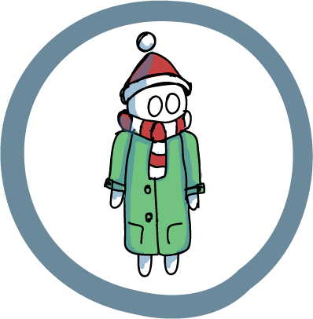

Афанасий Петрович
возраст: 35, хобби : собирать газеты, привычки: Читает по утрам газеты, любит тепло, лавочки, фонари, ггулять в парке, не люит школоту, характер меланхолик, участвовал в событии Появление евстафия
текст
